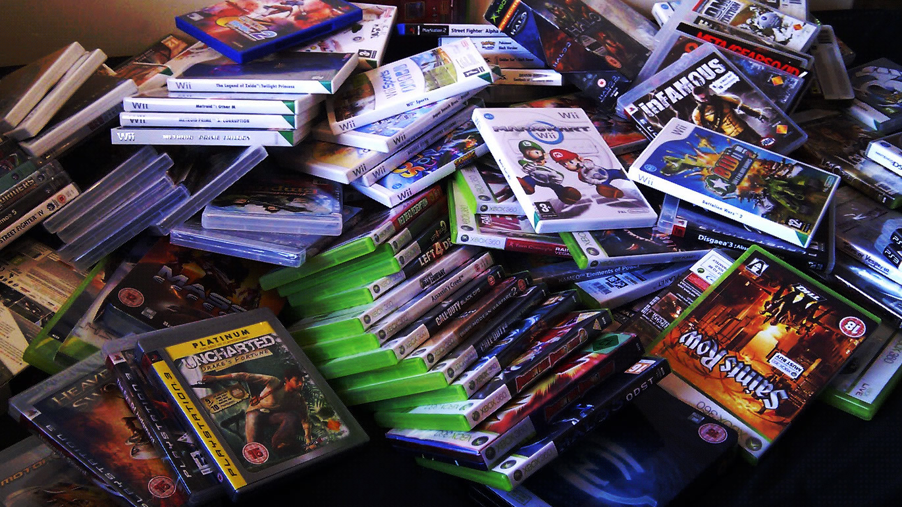

Video game collecting is a hobby that focuses on collecting and playing video games, controllers, consoles, and other forms of memorabilia. Most consoles released after a certain point become collectors' items due to being discontinued. These gaming collectables vary in price from being decently cheap to being around the hundred and thousand-dollar range.
Collectors normally narrow their search to specific characteristics that they like in games. Examples of some traits are the genre of games, being published by a specific developer or a video game console they may favor, having a character that they may love, and the overall pricing and availability of the item.
Some factors that come into effect in the overall pricing of the collectables are the overall recognition of the brand or franchise of the game, and the overall functionality of the collectable. Another factor that might affect the overall prices of a game is if it becomes unavailable on digital game services. An example of this is games that are on old systems that haven't been ported to modern hardware.
For more information of some of the different types of gaming memorabilia: Click here!
To learn about some overall tips for collecting video games: Click here!
Return home